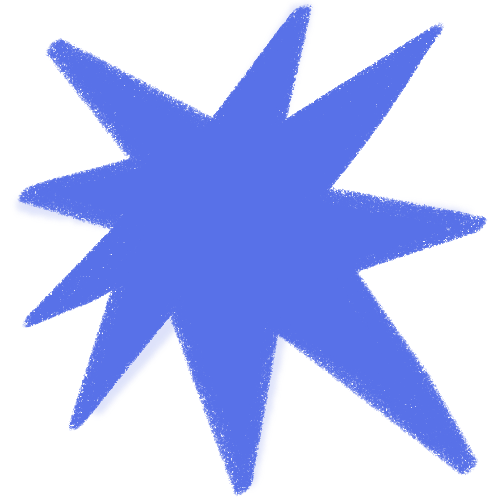

Estudiante de Diseño y Comunicación Visual e ilustradora freelance con formación y experiencia en el campo de la imagen y la comunicación.
Desde el 2019 trabajo de forma independiente realizando ilustraciones digitales para clientes de manera informal. Me apasiona explorar los lenguajes visuales desde una mirada moderna y colorida.
Estoy en búsqueda de oportunidades que me permitan seguir formándome, aportar mi visión artística y crecer profesionalmente en espacios donde se valore el diseño como forma de expresión y comunicación.